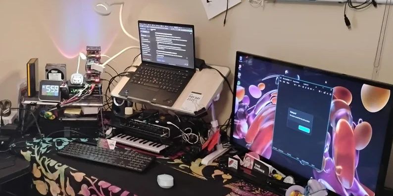

Figure 1: A Generic Home Lab
Introduction
Why Build a Home Lab?
A home lab is essentially a mini data center set up right in your own living space. It can range from a single, low-power mini PC hidden behind a desk to a dedicated server rack filled with enterprise-grade network gear, switches, and uninterruptible power supplies (UPS).
Many people build home labs because they want complete ownership over their data. Instead of trusting third-party cloud corporations with their files, photos, and smart devices, they self-host.
Private Cloud Storage: Running alternatives like Nextcloud to replace Google Drive or Dropbox.
Local Smart Home Control: Using platforms like Home Assistant to manage smart switches, lights, and automated voice clients locally. This ensures your automated routines still work flawlessly even if your internet connection goes down entirely.
Media Streaming: Setting up personal media servers (like Plex or Jellyfin) to stream an owned movie and music collection without relying on changing streaming platform catalogs.
Breaking Things Safely: If you want to learn enterprise network configurations, cluster computing, or test out container environments like Docker, doing it on a production system at work is a massive risk. A home lab lets you experiment, break configurations, and learn how to rebuild them with zero real-world consequences.
Hypervisor Mastery: It provides a space to learn type-1 hypervisors (like Proxmox VE or VMware ESXi) to split one physical machine into dozens of isolated virtual machines (VMs).
Recommended Design Architecture
Basic Home Lab Configuration
A Home Lab self-contained in an inexpensive single mini-computer.

Figure 2: Proxmox VE 9.2.3 / Minicomputer Architecture & Network Diagram
Note: If you want to use this information in an AI window – select this section into your chat window to reference the entire configuration. This can be helpful if you want to ask any AI questions regarding your Home Lab configuration. Just tell your AI client "gemini" to load this config your reference in your conversation. It might be helpful to tell your AI conversation:
"Please start a clean conversation, flush all buffers and caches and then load this config Code 1: Barnes Home Lab Configuration
=========================================================================
Barnes Home Lab Configuration
KAMRUI HYPER H2 MINI PC (10C / 16T | 32GB RAM / up to
4.9GHz)
Proxmox VE 9.2.3 / Dedicated Ethernet / Intel Core
i7-13620H
Integrated GPU: Intel UHD Graphics (13th Gen) / 1TB PCIe NVMe
SSD
=========================================================================
[ PROXMOX VE HOST ] --------- Reserve 2GB RAM / 2 Threads for
overhead ]
│ 192.168.86.250
├──► [ VM 101 ] HOME ASSISTANT OS (HAOS)
│ ├── CPU: 2 Cores (vCPUs)
│ ├── RAM: 4 GB (Dedicated)
│ ├── STO: 32 GB - 64 GB NVMe
│ ├── 192.168.86.251 - Primary LAN Segment (vmbr0) eth0
│ └── 10.0.10.1/24 - Isolated Backend Segment (vmbr1 -
│ No Gateway/DNS Emulation) eth1
├──► [ LXC 100 ] DNSMASQ SERVER (PiHole)
│ ├── CPU: 1 Core (vCPU)
│ ├── RAM: 512 MB (Ultra-lightweight)
│ ├── STO: 2 GB NVMe
│ └── 192.168.86.254 (Currently .249 until production
release)
├──► [ LXC 102 ] NGINX PROXY MANAGER
│ ├── CPU: 2 Cores (vCPUs)
│ ├── RAM: 1 GB (Scalable)
│ ├── STO: 8 GB (OS) + Mount point to external storage for
media
│ └── 192.168.86.252
├──► [ LXC 103 ] OLLAMA LLM ENGINE
│ ├── CPU: 6 Cores (vCPUs) ---> (Uses high-perf Intel
P-Cores)
│ ├── GPU Passthru: Vulkan0 Intel(R) Graphics (RPL-P)
│ type=iGPU total=23.3 GiB Ram
│ ├── RAM: 16 GB (Allows up to 8B/11B parameter models)
│ ├── STO: 40 GB NVMe --------> (Large capacity for model
weights)
│ ├── LAM: gemma3:4b ---------> Multimodal (Vision) &
128K Context Window
│ ├── LAM: phi4-mini:latest --> Logic, Intense Reasoning,
& Tool Calling
│ ├── LAM: qwen2.5-coder:7b --> Complex Automation
Engineering,
│ Code Sandbox, & YAML Chat
│ ├── LAM: qwen2.5-coder:1.5b -> Inline IDE Autocomplete
Engine
│ (Fed via Desktop on LAN)
│ ├── LAM: nomic-embed-text --> Vector Embeddings &
Local
│ Document Context Parsing
│ ├── 192.168.86.253 - Primary LAN Segment (vmbr0) eth0
│ └── 10.0.10.3/24 - Isolated Backend Segment (vmbr1 - No
│ Gateway/DNS Emulation) eth1
├──► [ LXC 104 ] WYOMING-DOCKER
│ ├── CPU: 2 Cores (vCPUs)
│ ├── RAM: 2 GB (Scalable)
│ ├── STO: 10 GB (OS) + Mount point to external storage
for
│ media
│ ├── ports: 10200:10200
│ ├── volumes: piper-data:/data
│ ├── 192.168.86.248 - Primary LAN Segment (vmbr0) eth0
│ └── 10.0.10.4/24 - Isolated Backend Segment (vmbr1) eth1
└──► [ LXC 105 ] TWINGATE CONNECTOR
├── CPU: 1 Core (vCPU)
├── RAM: 512 MB (Ultra-lightweight)
├── STO: 2 GB NVMe (OS Only)
└── 192.168.86.247 - Primary LAN Segment (vmbr0) eth0
(Routes 192.168.86.0/24 Securely)
Installing your Home Lab on a Mini-Computer
Although this setup may seem complex, you can complete the installation in a day or two and have a complete, running system ready for a production rollout of your new Home Lab.
Step by Step instructions
To run Proxmox, Home Assistant, NGINX, PiHole, Twingate Connector and Ollama together, a Proxmox VE (PVE) base layer is the best approach.
Proxmox VE base layer
When running there are some recommended resource allocations that you will be asked for. Use the details presented in each section, if there are questions the table in Code 2: Barnes Home Lab Configuration can be used for reference to allocate your resources efficiently to avoid crashing the host.
Step-by-Step Deployment Guide
Step 1: Download the latest Proxmox VE ISO from the official website located at https://www.proxmox.com/en/downloads/proxmox-virtual-environment.
1. Flash it to a USB drive using BalenaEtcher or Rufus. 2. Boot your KAMRUI Mini PC into the BIOS and disable Secure Boot. Also enable power on after power reset. 3. Boot from the USB, follow the on-screen installer prompts, and set a static IP address. |
|---|
Code 3: Promox Boot Disk
Step 2: Setup Putty/ssh for easy communication with your new Home Lab.
To set up passwordless SSH login to a Proxmox VE server using PuTTY, you need to generate a key pair on Windows, add the public key to Proxmox, and configure PuTTY to use the private key.
Here is the complete step-by-step process.
o Generate an SSH Key • Open PuTTYgen on your Windows computer. • Under Type of key to generate, select Ed25519 for modern security and speed. • Click the Generate button. • Move your mouse randomly over the blank area to create entropy for the key generation. Crucial: Leave both passphrase fields completely blank to ensure a passwordless login. • Click Save private key and save it to a secure folder on your PC as a .ppk file Save the location for use below. • Keep the PuTTYgen window open; you will need the text string inside the top box labeled Public key for pasting into OpenSSH authorized_keys file. o Add the Public Key to Proxmox(SyncBricks, 2024) • Launch PuTTY and log into your Proxmox server using your standard root username and password. • Create the directory for SSH keys if it does not already exist: o mkdir -p ~/.ssh • Set the appropriate folder permissions: o chmod 700 ~/.ssh • Open or create the authorization file with a text editor: o vi ~/.ssh/authorized_keys • Go back to your PuTTYgen window, copy the entire string of text from the top box, and paste it into the PuTTY window. It must occupy a single line. • save the file, and exit the vi editor ("enter :wq! ". • Secure the authorization file permissions: o chmod 600 ~/.ssh/authorized_keys o Configure PuTTY for Key Authentication • Close your current PuTTY session and open a brand new PuTTY window. • On the Session category page (on the left panel), type your Proxmox server's IP address (192.168.86.250) into the Host Name field. • In the left panel, navigate to Connection ➔ Data. • In the Auto-login username box, type root (or your chosen administrative username). • In the left panel, drill down to Connection ➔ SSH ➔ Auth ➔ Credentials. • Click Browse next to Private key file for authentication and select the .ppk file you saved above. • Navigate back to the Session category at the very top of the left panel. • Type a name for this connection profile (e.g., Proxmox_Server) in the Saved Sessions box and click Save. • Click Open. PuTTY will now log into your Proxmox console automatically using the private key, bypassing the password prompt completely. |
|---|
Code 4: Putty-ssh Setup Process
Step 3: Use Helper Scripts for Easy Setup of the remaining products.
If you do not think you want that specific product installed, then you may skip that section. Just be aware that when you get to the tools and backup sections below the scripts may change. If you do end up changing the scripts remember that you can comment on the lines by using a "#" at the beginning of the line you do not want executed. That way later you know what to uncomment if you change your mind.
Once Proxmox is installed,
open the Proxmox Web UI (https:// 192.168.86.250:8006)
select your main node
open the Shell
In this window you can execute simple commands and check for status if you desire
To use the community-standard Proxmox VE Helper-Scripts listed below to deploy your services instantly open a dedicated ssh window for running install scripts. Leave your Proxmox Web UI for small tasks.
PiHole (LXC 100)
To install PiHole run this command to deploy a lightweight container:
| bash -c "$(curl -fsSL |
| https://raw.githubusercontent.com/community-scripts/ProxmoxVE/main/ct/pihole.sh)" |
Code 5: PiHoleInstallCommand.sh
When you copy and run this command it will start the install script. Always select the advance installation and if prompted select the GUI install method. When prompted enable all ssh keys and enable ssh.
Make the selections in the GUI by using the output presented below:
After you run the above code block you will get an output like this. - Verify that it matches.
Choose Advanced, set MAC address to BC:24:11:AA:BB:02, static IP 192.168.1.5/24, and Gateway 192.168.1.1, then finish. ⚙️ Using Default Settings on node Promox | 💡 PVE Version 9.2.2 (Kernel: 7.0.2-6-pve) 🆔 Container ID: 100 🖥️ Operating System: debian (13) | 📦 Container Type: Unprivileged 💾 Disk Size: 2 GB 🧠 CPU Cores: 1 🛠️ RAM Size: 512 MiB | 🚀 Creating a Pihole LXC using the above default settings forwarding unbound |
|---|
Code 6: PiHole Install Parameters and Response
Home Assistant OS (LXC 101 - HAOS VM)
Run this command in the Proxmox host shell to automatically build a fully functional Home Assistant VM: When prompted enable all ssh keys and enable ssh.
| bash -c "$(curl -fsSL |
| https://raw.githubusercontent.com/community-scripts/ProxmoxVE/main/vm/haos-vm.sh)" |
Code 7: HAOSInstallCommand.sh
When you copy and run this command it will start the install script.
Make the selections in the GUI by using the output presented below: When prompted enable all ssh keys and enable ssh.
After you run the above code block you will get an output like this. - Verify that it matches.
Please set MAC address to BC:24:11:AA:BB:01, IP Address to 192.168.86.251/24, and gateway to 192.168.86.1 🆔 Virtual Machine ID: 101 📦 Machine Type: q35 💾 Disk Size: 32G 🏠 Hostname: haos-17.3 🖥️ CPU Model: KVM64 | 🧠 CPU Cores: 2 🛠️ RAM Size: 4096 | 🌉 Bridge: vmbr0 🔗 MAC Address: 02:93:F8:A8:3A:88 🏷️ VLAN: Default | ⚙️ Interface MTU Size: Default | 🌐 Start VM when completed: yes 🚀 Creating a Homeassistant OS VM using the above default settings |
|---|
Code 8: HAOS Install Parameters and Response
NGINX Proxy Manager (LXC 102):
Run this command to deploy a lightweight NGINX container:
| bash -c "$(wget -qLO - |
| https://github.com/community-scripts/ProxmoxVE/raw/main/ct/nginxproxymanager.sh)" |
Code 9: NGINXInstallCommand.sh
When you copy and run this command it will start the install script. Always select the advance installation and if prompted select the GUI install method.
Make the selections in the GUI by using the output presented below: When prompted enable all ssh keys and enable ssh.
After you run the above code block you will get an output like this. - Verify that it matches.
🧩 Using Advanced Install on node Promox 💡 PVE Version 9.2.3 (Kernel: 7.0.6-2-pve) 🖥️ Operating System: debian | 🌟 Version: 13 📦 Container Type: Unprivileged 🆔 Container ID: 102 🏠 Hostname: nginxproxymanager 💾 Disk Size: 8 GB 🧠 CPU Cores: 2 🛠️ RAM Size: 1024 MiB | 🌉 Bridge: vmbr0 📡 IPv4: 192.168.86.252/24 📡 IPv6: none 🗂️ FUSE Support: no | 📦 Nesting: Enabled 📦 Keyctl: Enabled 🎮 GPU Passthrough: no 💡 Timezone: America/Denver 🔍 Verbose Mode: yes 🚀 Creating an LXC of Nginx Proxy Manager using the above advanced settings |
|---|
Code 10: NGINX Install Parameters and Response
Ollama AI Engine (LXC 103)
This uses the specialized ollama.sh hardware and software installer path:
| bash -c "$(curl -fsSL |
| https://raw.githubusercontent.com/community-scripts/ProxmoxVE/main/ct/ollama.sh)" |
Code 11: OllamaInstallCommand.sh
When you copy and run this command it will start the install script. Always select the advance installation and if prompted select the GUI install method.
Make the selections in the GUI by using the output presented below: When prompted enable all ssh keys and enable ssh.
After you run the above code block you will get an output like this. - Verify that it matches.
🧩 Using Advanced Install on node Promox 💡 PVE Version 9.2.2 (Kernel: 7.0.2-6-pve) 🖥️ Operating System: debian | 🌟 Version: 13 📦 Container Type: Unprivileged 🆔 Container ID: 103 🏠 Hostname: ollama 💾 Disk Size: 40 GB 🧠 CPU Cores: 6 🛠️ RAM Size: 16384 MiB | 🌉 Bridge: vmbr0 📡 IPv4: 192.168.86.249/24 📡 IPv6: none 🗂️ FUSE Support: no | 📡 TUN/TAP Support: no 📦 Nesting: Disabled 📦 Keyctl: Enabled 🎮 GPU Passthrough: yes Protection: no 💡 Timezone: America/Denver 🔍 Verbose Mode: no |
|---|
Code 12: Ollama Install Parameters and Response
Load the Agents
In the Prolog Web GUI at http://192.168.86.250:8006 and select Datacenter - Promox - 103 (ollama) in the Server View column
In Container 103 (ollama) on node Promox window select the console
It should log you in without using a password.
If it does not - then log in as root with the password of your Promox server
Enter "passwd" and set the new password the same as your Promox server's password.
The next time you log in it should not ask you for the password anymore.
In this window enter the commands listed below:
1. Load the Primary Voice & Conversation Agent • ollama pull qwen2.5:7b 2. Load the Complex Automation & Code Sandbox Agent • ollama pull qwen2.5-coder:7b 3. Load the Inline IDE Autocomplete Engine • ollama pull qwen2.5-coder:1.5b 4. Load the Embedding Model • ollama pull nomic-embed-text 5. Test the Primary Voice Agent • echo "Hello, how are you today?" | ollama run qwen2.5:7b 6. Test the Code Sandbox • echo "Write a simple Python function to add two numbers." | ollama run qwen2.5-coder:7b 7. Test the IDE Autocomplete Engine • echo "def hello_world():" | ollama run qwen2.5-coder:1.5b 8. Test the Coding Engine • curl http://localhost:11434/api/embeddings -d '{ "model": "nomic-embed-text", "prompt": "Testing local document parsing" }' |
|---|
Code 13: Loading the Agents
How to Connect Ollama to Home Assistant
For Voice: Install the official Ollama Integration in Home Assistant.
Open the Home Assistant Web Page by going to http://homeassistant.local:8123.
Open your Home Assistant Dashboard.
Navigate to Settings > Voice Assistants.
Create an Assist Pipeline, and assign the qwen2.5:7b model to handle your conversational sentences and smart home exposures.
For Coding:
Point your development environment (like VS Code or Cursor) to your server's IP address (http://192.168.86.250:11434) using a local copilot extension to begin drafting automations locally.
It is highly recommended to use external VS Code IDEs instead of the embedded Home Assistant Integration. You can still connect remotely via ssh and do everything without bogging down your Home Assistant Environment.
Wyoming Docker Installation (LXC104 - Docker)
Step 1: Create a Docker LXC in Proxmox
The easiest way to get Docker running in an LXC is to use the community-maintained Proxmox Helper Scripts, which handle setup and dependencies automatically.
Execute the following command inside of a Putty-SSH window connected to the Promox host.
This must be done in a Putty Shell and not via the Promox web GUI because if the GUI gets changed or dies for some reason the script will be backgrounded. If it is waiting for a prompt, it will never exit.
| bash -c "$(curl -fsSL |
| https://raw.githubusercontent.com/community-scripts/ProxmoxVE/main/ct/docker.sh)" |
Code 14: DockerInstallCommand.sh
When you copy and run this command it will start the install script. Always select the advance installation and if prompted select the GUI install method.
Make the selections in the GUI by using the output presented below:
Ensure you enable all ssh keys and enable ssh, Docker Compose AND install Portainer during the prompt, as you will need it to run your Wyoming services later.
After you run the above code block you will get an output like this. - Verify that it matches.
🧩 Using Advanced Install on node Promox 💡 PVE Version 9.2.2 (Kernel: 7.0.2-6-pve) 🖥️ Operating System: debian | 🌟 Version: 13 📦 Container Type: Unprivileged 🆔 Container ID: 104 🏠 Hostname: wyoming-docker 💾 Disk Size: 10 GB 🧠 CPU Cores: 4 🛠️ RAM Size: 2048 MiB | 🌉 Bridge: vmbr0 📡 IPv4: 192.168.86.249/24 📡 IPv6: none 🗂️ FUSE Support: yes | 📡 TUN/TAP Support: yes 📦 Nesting: Enabled 📦 Keyctl: Enabled 🎮 GPU Passthrough: no 💡 Timezone: America/Denver 🔍 Verbose Mode: no 💡 If you installed Portainer, access it at the following URL: 🌐 https://192.168.86.249:9443 |
|---|
Code 15: Wyoming Docker Install Parameters and Response
Step 2: Set Up Wyoming Docker Services
Now that Docker is installed in your LXC, you can deploy your chosen Wyoming voice or speech-to-text tools.
- SSH into your Docker LXC IP address do not use the Proxmox Web UI Console.
- Configure PuTTY for Key Authentication
o Close your current PuTTY session and open a brand new PuTTY window. o On the Session category page (on the left panel), type your Wyoming-docker IP address (192.168.86.248) into the Host Name field. o In the left panel, navigate to Connection ➔ Data. o In the Auto-login username box, type root (or your chosen administrative username). o In the left panel, drill down to Connection ➔ SSH ➔ Auth ➔ Credentials. o Click Browse next to Private key file for authentication and select the .ppk file you saved above. o Navigate back to the Session category at the very top of the left panel. o Type a name for this connection profile (e.g., Proxmox_Wyoming) in the Saved Sessions box and click Save. o Click Open. PuTTY will now log into your Wyoming console automatically using the private key, bypassing the password prompt completely. |
|---|
Code 16: Putty Setup
- Create a docker-compose.yaml file to manage your Wyoming services. For example, to set up the Piper Text-to-Speech and Whisper Speech-to-Text services, run:
mkdir -p ~/wyoming && cd ~/wyoming vi docker-compose.yaml |
|---|
Code 17: WyomingDockerCompose.sh
Paste the following configuration, making sure to replace paths and voices with your preferences:
services: piper: image: rhasspy/wyoming-piper container_name: wyoming-piper restart: unless-stopped volumes: - ./piper-data:/data ports: - "10200:10200" command: --voice en_US-lessac-medium whisper: image: rhasspy/wyoming-whisper container_name: wyoming-whisper restart: unless-stopped volumes: - ./whisper-data:/data ports: - "10300:10300" command: --model tiny-int8 --language en |
|---|
Code 18: Wyoming-Docker Portainer Stack
Spin up the containers by typing the following command in you Putty ssh window:
| docker compose up -d |
Code 19: DockerCompose.sh
Step 3: Connect to Home Assistant
Once your Docker containers are running on the Proxmox LXC, you can easily link them to Home Assistant:
Open your Home Assistant Dashboard.
Navigate to Settings > Devices & Services.
Click Add Integration and search for Wyoming Protocol.
Enter the IP address of your Proxmox Docker LXC (192.168.86.248/24) and the corresponding port for the service (e.g., 10200 for Piper or 10300 for Whisper) integrations and associate the following links.
Step 3: Portainer/Docker changes
Home Assistant Wyoming Integration: Settings -> Devices & Services -> Add Integration -> Wyoming link ports 10200 and 10201. For Voice: Install the official Ollama Integration in Home Assistant. Go to Settings -> Voice Assistants, create an Assist Pipeline, and assign the qwen2.5:7b model to handle your conversational sentences and smart home exposures. For Coding: Point your development environment (like VS Code or Cursor) to your server's IP address (http://<your-server-ip>:11434) using a local copilot extension to begin drafting automations locally. NOTE: I found that running VS Code inside of HAOS is a bad idea. I reccommend running the VS Code on a client and point it to HAOS You can use a Remote Connection via to see the filesystem. Do not mount the root fs - It will hang the server with indexing. |
|---|
Code 20: HAOS-Wyoming Integrations
Twingate Connector (LXC 105)
Installing Twingate on a Proxmox server is straightforward and highly automated, taking only a few minutes to complete.
Before running the script, you must generate the necessary Connector tokens from your Twingate Admin Console.
Phase 1: Generate Twingate Connector Tokens
Log in to your Twingate Admin Console https:// twingate.com.
If you don’t have an account you will need to create one.
After you are logged in Go to Network > Remote Networks and select your remote network (or create one).
Click to Add a Connector and select the Manual deployment type.
Scroll down and click Generate Tokens.
Copy the Access Token and Refresh Token (you will need these below)
| bash -c "$(curl -fsSL |
| https://raw.githubusercontent.com/community-scripts/ProxmoxVE/main/ct/twingate-connector.sh)" |
Code 21: TwingateConnectorInstallCommand.sh
Paste the following configuration, making sure to replace paths and voices with your preferences:
💡 Missing jq for script status check. Continuing without status verification. 🧩 Using Advanced Install on node Promox 💡 PVE Version 9.2.3 (Kernel: 7.0.6-2-pve) 🖥️ Operating System: ubuntu | 🌟 Version: 24.04 📦 Container Type: Unprivileged 🆔 Container ID: 105 🏠 Hostname: twingate-connector 💾 Disk Size: 5 GB 🧠 CPU Cores: 1 🛠️ RAM Size: 1024 MiB | 🌉 Bridge: vmbr0 📡 IPv4: 192.168.86.247/24 📡 IPv6: none 🗂️ FUSE Support: no | 📦 Nesting: Enabled 📦 Keyctl: Enabled 🎮 GPU Passthrough: no 💡 Timezone: America/Denver 🔍 Verbose Mode: no 🚀 Creating an LXC of Twingate-Connector using the above advanced settings ✔️ Updated Container OS | Please enter your access token: enter your access token from above. Please enter your refresh token: enter your access token from above. Please enter your network name: enter your network name from above. |
|---|
Code 22: Twingate Connector Install Parameters
Post Install Scripts
Proxmox Scripts:
Setting Vi as your default editor
To set vi as the default editor across all containers in your Barnes Home Lab, you can use a bash loop script run directly from your Proxmox host terminal.
Since vi is natively included in almost every Linux distribution (including minimal Debian, Ubuntu, and Alpine templates), this script will work universally without needing to install extra packages.
The Automation Script
This automated bundle contains the baseline configurations, code layouts, and operational manifests tracked for this module.
👁️ Internal Asset Preview
All embedded diagrams, schematics, and configurations are packaged below. Click the button to download the full-resolution archive block.
Run this complete script on your Proxmox host terminal:
for vmid in $(pct list | awk '{print $1}' | grep -E '^[0-9]+$'); do echo "----------------------------------------" echo "Updating Container $vmid..." # 1. Update root user's profile pct exec $vmid -- sh -c 'echo "export EDITOR=\"vi\"" >> /root/.bashrc' # 2. Update system-wide environment fallback pct exec $vmid -- sh -c 'echo "export EDITOR=\"vi\"" >> /etc/profile' echo "Container $vmid updated successfully." done echo "----------------------------------------" echo "All containers configured to use vi as the default editor." |
|---|
Code 23: SetVIasDefault.sh
What This Script Does
This automated bundle contains the baseline configurations, code layouts, and operational manifests tracked for this module.
👁️ Internal Asset Preview
All embedded diagrams, schematics, and configurations are packaged below. Click the button to download the full-resolution archive block.
Finds All LXCs: Loops through your existing containers (LXC 100, 102, 103, 104, and 105).
Updates Root Profiles: Appends the environment variable to /root/.bashrc for root terminal sessions.
Sets a System-Wide Fallback: Appends the variable to /etc/profile to capture system-wide processes, automation tasks, and alternative shell instances.(Fiala, 2020)
How to Apply It to Future Containers
This automated bundle contains the baseline configurations, code layouts, and operational manifests tracked for this module.
👁️ Internal Asset Preview
All embedded diagrams, schematics, and configurations are packaged below. Click the button to download the full-resolution archive block.
To guarantee that any new containers you build in the future also default to vi, run this single command on your Proxmox host to update the global skeleton directory:
| echo 'export EDITOR="vi"' >> /etc/skel/.bashrc |
Code 24: ExportVIasDefault.sh
Twingate Connector
To safely disable password-based SSH logins and prevent brute-force attacks on Proxmox, you must verify your key-based login is working, modify the SSH daemon configuration, and restart the service.
Phase 1: Verify Your Current Setup
Keep your current session open. Do not close your active SSH window until you verify the new changes work.
Test the key login in a new window. Open a second PuTTY window, load your saved session, and click Open.
Confirm success. Ensure you log in automatically without any password prompt before proceeding.
Phase 2: Modify the SSH Configuration File
- In your active Proxmox terminal, open the SSH configuration file:
- vi /etc/ssh/sshd_config
Press Ctrl + W to search for PasswordAuthentication.
Remove any # symbol from the beginning of the line to uncomment it.
Change the value from yes to no:
PasswordAuthentication no
Press Ctrl + W to search for ChallengeResponseAuthentication (or KbdInteractiveAuthentication on newer Proxmox versions).
Ensure it is also set to no:
ChallengeResponseAuthentication no
- Save and exit the file by pressing Ctrl + O, Enter, then Ctrl + X. (SecureBits, n.d.; Project X, n.d.; Rackspace, n.d.; E2E Networks, n.d.; DigitalOcean, 2021)
Phase 3: Apply and Test the Changes
- Apply the new settings by restarting the SSH service:
- systemctl restart sshd
Keep this configuration window open.
Launch a completely new instance of PuTTY.
Attempt to log in to your Proxmox server without loading your private key.
Confirm the server rejects the connection with a No supported authentication methods available error.
Open another PuTTY window with your private key loaded to confirm you can still access the server.
If both tests pass, you can safely close your original terminal window. Your Proxmox host is now immune to password brute-force attacks.
Post-Script Configuration Injection
Because helper scripts typically only create the primary interface (eth0 on vmbr0), you can instantly wire up your isolated backend (vmbr1), lock down your resource caps, and configure your pass-through requirements using these post-install snippets.
This is the best way to ensure the entire system is set up correctly.
Run these directly on your Proxmox host terminal right after a script finishes:
1. For Home Assistant OS (VM 101)
Run this because you used the HAOS VM installer to attach your second isolated network adapter:
>>> BASH Script start # Add the second network interface for the isolated 10.0.10.x backend qm set 101 --net1 virtio,bridge=vmbr1 # Enforce your custom CPU and RAM rules qm set 101 --cores 2 --memory 4096 >>> BASH Script end |
|---|
Code 25: HAOSPost.sh
2. Pi-Hole Limits (Ensuring it uses the temporary staging IP)
>>> BASH Script start pct set 100 --cores 1 --memory 512 --net0 name=eth0,bridge=vmbr0,ip=192.168.86.249/24,gw=192.168.86.1 pct restart 102 pct restart 100 >>> BASH Script end |
|---|
Code 26: PiHolePost.sh
3. For Ollama LLM Engine (LXC 103)
Run this right after the Ollama LXC script finishes to attach the isolated segment and map your 13th Gen Intel iGPU:
>>> BASH Script start # 1. Attach the isolated network backend interface (eth1) pct set 103 --net1 name=eth1,bridge=vmbr1,ip=10.0.10.3/24 # 2. Allocate the 6 high-performance vCPUs and 16GB RAM limits pct set 103 --cores 6 --memory 16384 # 3. Inject the Intel iGPU Passthrough rules into the LXC hardware config cat <<EOF >> /etc/pve/lxc/103.conf lxc.cgroup2.devices.allow: c 226:0 rwm lxc.cgroup2.devices.allow: c 226:128 rwm lxc.mount.entry: /dev/dri dev/dri none bind,optional,create=dir lxc.mount.entry: /dev/dri/renderD128 dev/dri/renderD128 none bind,optional,create=file EOF pct restart 103 >>> BASH Script end |
|---|
Code 27: OllamaHolePost.sh
New:
Append these environment flags directly to your Ollama service definition file (usually found at /etc/systemd/system/ollama.service.d/override.conf or directly inside your LXC startup script environment variables):
Advanced Intel oneAPI & SYCL Tuning Flags
Add the following environment lines to your deployment:
# Force the Intel driver to bypass aggressive power savings and keep execution units alert
NEOReadDebugKeys=1
OverrideGpuAddressSpace=48
# Tell the SYCL backend to strictly optimize for low-latency single-batch generation
# This prevents the thread-pool from waiting for data batches during quick autocomplete requests
CL_PROGRAM_OPTS="-cl-mad-enable -cl-fast-relaxed-math"
# Direct the GGML backend to pin memory mappings across the virtualized container bridge
OLLAMA_NUM_GPU=999
GGML_OPENCL_PLATFORM=Intel
4. For Wyoming Docker (LXC 104)
Run this to map the isolated network switch so it can talk privately to the Ollama API:
>>> BASH Script start # Attach the isolated network backend interface (eth1) pct set 104 --net1 name=eth1,bridge=vmbr1,ip=10.0.10.4/24 # Enforce your 2 Cores and 2GB RAM blueprint pct set 104 --cores 2 --memory 2048 pct restart 104 >>> BASH Script end NOTES Change the subscription keys at the Proxmox level • echo "Enabled: no" >> /etc/apt/sources.list.d/pve-enterprise.sources • echo "Enabled: no" >> /etc/apt/sources.list.d/ceph.sources • cat <<EOF > /etc/apt/sources.list.d/pve-enterprise.sources Types: deb URIs: https://enterprise.proxmox.com/debian/pve Suites: trixie Components: pve-enterprise Signed-By: /usr/share/keyrings/proxmox-archive-keyring.gpg Enabled: no EOF • cat <<EOF > /etc/apt/sources.list.d/ceph.sources Types: deb URIs: https://enterprise.proxmox.com/debian/ceph-squid Suites: trixie Components: main Signed-By: /usr/share/keyrings/proxmox-archive-keyring.gpg Enabled: no EOF • vi /etc/apt/sources.list.d/pve-no-subscription.sources Enter 'i' in the window, then paste in the following lines. Types: deb URIs: http://download.proxmox.com/debian/pve Suites: trixie Components: pve-no-subscription Signed-By: /usr/share/keyrings/proxmox-archive-keyring.gpg Then entera ":!wq" wo save and exit the vi editor Execute the following: • apt dist-upgrade -y |
|---|
Code 28: WyomingPost.sh
Disaster Recovery:
Text Configuration Backup Script
To secure your precise resource layouts, network definitions, and maps, keep this custom backup tool saved on your host.
Creating the Host Backup Automator
Log into your Proxmox Host Shell.
Create the script file:
- vi /root/backup_all_configs.sh
Paste the following code:
#!/bin/bash # Configuration BACKUP_DIR="/var/lib/vz/dump/config_backups" TIMESTAMP=$(date +"%Y%m%d_%H%M%S") ARCHIVE_NAME="${BACKUP_DIR}/ed_proxmox_configs_${TIMESTAMP}.tar.gz" TEMP_DIR="/tmp/unified_config_backup" # Your specific Node IDs LXCS=(100 102 103 104) VMS=(101) echo "====================================================" echo "Starting Configuration Backup for Ed's KAMRUI PC..." echo "====================================================" # Initialize clean workspace mkdir -p "$BACKUP_DIR" mkdir -p "$TEMP_DIR" echo "[1/3] Copying Proxmox host system parameters..." cp -r /etc/pve/ "$TEMP_DIR/pve_cluster_virtual_fs/" cp /etc/network/interfaces "$TEMP_DIR/host_network_interfaces" cp /etc/passwd /etc/group "$TEMP_DIR/" echo "-> Host network, storage definitions, and clusters copied successfully." echo "[2/3] Copying individual Container & VM .conf files..." for id in "${LXCS[@]}"; do if [ -f "/etc/pve/lxc/${id}.conf" ]; then echo " -> Copying LXC ${id}.conf..." cp "/etc/pve/lxc/${id}.conf" "$TEMP_DIR/" else echo " -> WARNING: LXC ${id}.conf file was not found!" fi done for id in "${VMS[@]}"; do if [ -f "/etc/pve/qemu-server/${id}.conf" ]; then echo " -> Copying VM ${id}.conf..." cp "/etc/pve/qemu-server/${id}.conf" "$TEMP_DIR/" else echo " -> WARNING: VM ${id}.conf file was not found!" fi done echo "[3/3] Packing everything into gzip archive..." tar -czf "$ARCHIVE_NAME" -C "$TEMP_DIR" . rm -rf "$TEMP_DIR" echo "====================================================" echo "SUCCESS! All text configurations backed up cleanly." echo "Archive saved to: $ARCHIVE_NAME" echo "====================================================" |
|---|
Code 29: backup_all_configs.sh
Save and exit (ESC, :wq, Enter).
Make the script executable:
- chmod +x /root/backup_all_configs.sh
Execute it at any time to output a fresh, timestamped config snapshot to your host storage directory:
/var/lib/vz/dump/config_backups/
Tools to verify Installation and functionality
How to Quickly Verify Promox Container Configurations:
Sometimes a quick check is needed to verify if there is a problem. For example, you may want to know if a specific Proxmox container can see all your other containers.
You can log into any Promox container via Putty ssh or the Promox web page. In the Promox container select Console and paste in the following code. Or you can open Putty and select the Container you want. In that shell paste in the following code:
#!/bin/bash declare -A nodes=( ["Wyoming Docker"]="192.168.86.248" ["Pi-hole"]="192.168.86.249" ["Home Assistant"]="192.168.86.251" ["NGINX"]="192.168.86.252" ["Ollama Engine"]="192.168.86.253" ["Surveillance NAS"]="192.168.86.104" ["Primary NAS"]="192.168.86.93" ["EdsDesktop"]="192.168.86.246" ["Home Assistant Backend"]="10.0.10.1" ["Pi-hole Backend"]="10.0.10.4" ["Pi-hole Backup"]="192.168.86.254" ) echo "=== VERIFYING HOME LAB NETWORK INTERCONNECTS ===" for name in "${!nodes[@]}"; do ip=${nodes[$name]} if ping -c 1 -W 1 "$ip" > /dev/null; then echo -e "✅ [ONLINE] $name matches configuration at $ip" else echo -e "❌ [OFFLINE] $name failed to respond at $ip" fi done # ollama model verification curl -s http://192.168.86.253:11434/api/tags | grep -o '"name":"[^"]*"' | sed 's/"name":"//;s/"//' echo -e "\n=== VM 101 (HAOS) CONFIG ===" && cat /etc/pve/qemu-server/101.conf | grep -E "cores|memory|scsi|sata|virtio" && echo -e "\n=== LXC CONFIGURATIONS ===" && for id in 100 101 102 103 104 105; do echo -e "\n--- Container $id ---"; cat /etc/pve/lxc/$id.conf | grep -E "cores|memory|rootfs|mp"; done |
|---|
Code 30: QuickSystemTest.sh
When you copy and run this simple script in a terminal of your Putty Shell, Proxmox host, or any Linux-based container it automatically verifies that every IP in your config is alive and responsive on your subnet. It will also tell you specific configuration items for each container that you can verify against this output.
After you run the above code block you will get an output like this.
=== VERIFYING HOME LAB NETWORK INTERCONNECTS === ✅ [ONLINE] Primary NAS matches configuration at 192.168.86.93 ✅ [ONLINE] Home Assistant matches configuration at 192.168.86.251 ✅ [ONLINE] Pi-hole Backend matches configuration at 10.0.10.4 ✅ [ONLINE] Ollama Engine matches configuration at 192.168.86.253 ✅ [ONLINE] Pi-hole matches configuration at 192.168.86.249 ✅ [ONLINE] Home Assistant Backend matches configuration at 10.0.10.1 ✅ [ONLINE] Surveillance NAS matches configuration at 192.168.86.104 ✅ [ONLINE] Wyoming Docker matches configuration at 192.168.86.248 ✅ [ONLINE] EdsDesktop matches configuration at 192.168.86.246 ✅ [ONLINE] Pi-hole Backup matches configuration at 192.168.86.254 ✅ [ONLINE] NGINX matches configuration at 192.168.86.252 gemma3:4b phi4-mini:latest nomic-embed-text:latest qwen2.5-coder:1.5b qwen2.5-coder:7b === VM 101 (HAOS) CONFIG === boot: order=scsi0 cores: 2 memory: 5120 net0: virtio=02:93:F8:A8:3A:88,bridge=vmbr0 net1: virtio=BC:24:11:3F:40:50,bridge=vmbr1 scsi0: local-lvm:vm-101-disk-0,discard=on,size=32G,ssd=1 scsihw: virtio-scsi-pci === LXC CONFIGURATIONS === --- Container 100 --- cores: 1 memory: 256 rootfs: local-lvm:vm-100-disk-0,size=2G --- Container 102 --- cores: 2 memory: 1024 rootfs: local-lvm:vm-102-disk-0,size=8G --- Container 103 --- cores: 6 memory: 16384 rootfs: local-lvm:vm-103-disk-0,size=60G --- Container 104 --- cores: 4 memory: 2048 rootfs: local-lvm:vm-104-disk-0,size=10G --- Container 105 --- cores: 1 memory: 1024 rootfs: local-lvm:vm-105-disk-0,size=5G root@Promox:~# |
|---|
Code 31: Quick System Test Response
The check boxes show the hosts are correctly configured and can communicate with each other.
References
🌐 Cloudflare Resources
🐧 Linux & Proxmox VE Resources
🐳 Docker & Containerization Resources
🏠 Home Assistant & Wyoming Protocols
🛑 Network Filtering, Remote Access & Security Resources
Pi-hole Docs: Deployment and Core Network Configuration Guide
DigitalOcean Community: Hardening SSH Access via Fail2Ban, Nftables, and Cloud Firewalls
🖥️ Developer Tools & Productivity Systems
Visual Studio Code Docs: Getting Started and Workspace Management
Microsoft Support: Advanced Find and Replace with Wildcard Syntax
⚙️ Web Servers & Local AI Engines
NGINX Core Docs: Reverse Proxy and Web Server Administration
Ollama Docs: Frequently Asked Questions and Configuration Flags
💻 Hardware Specifications & Vendor Documentation